library("QFeatures")
library("dplyr")
library("tidyr")
library("ggplot2")
library("msqrob2")
library("stringr")
library("ExploreModelMatrix")
library("MsCoreUtils")
library("matrixStats")
library("patchwork")
library("kableExtra")
library("ComplexHeatmap")
library("purrr")
library("tibble")
library("scater")Workflow optimisation using a Data Independent Acquisition spike-in study searched with Spectronaut
This chapter explains the main concepts for data-processing and statistical analysis of (DIA) proteomics data using msqrob2. To illustrate these concepts, we will use using a publicly available spike-in study published by Staes et al. (Staes et al. 2024). They spiked digested UPS proteins in a yeast digested background at the following ratio’s (yeast:ups ratio 10:1, 10:2, 10:4, 10:8, 10:10). Here we will use a subset of the data, i.e. dilutions 10:2, 10:4 and 10:8. We will use output of the search engine Spectronaut. The main search output for this Spectronaut version was stored in the report.parquet file
Spectronaut provides multiple quantifications, e.g. derived from the MS1 or MS2 spectra, and at precursor or protein (protein group) level. The term ‘precursor’ refers to a charged peptide species and is the basic unit of identification and quantification in DIA. Hence, in the context of DIA we refer to a precursor table, instead of to a PSM table in DDA.
Examples of different quantities are:
- raw MS1 quantity: FG_MS1RawQuantity, normalised MS1 quantity: FG_MS1Quantity, MS2 Precursor quantities: FG_MS2RawQuantity, Normalised MS2 Precursor quantities: FG_MS2Quantity, etc., which are all at the precursor level
- MS2 based summary at the protein (protein group)-level: PG_MaxLFQ
Here, we will use the FG_MS2RawQuantity column.
1 Load packages
We load the msqrob2 package, along with additional packages for data manipulation and visualisation.
2 Data
2.1 Precursor table
We load the output from Spectronaut parquet file.
precursorFile <- "data/spikein248-staesetal2024-spectronaut.parquet" We can import the report.parquet file using the read_parquet function from the arrow package. Note, that older versions of Spectronaut store the output as report.tsv.
precursors <- arrow::read_parquet(precursorFile) # function from the arrow package
#precursors <- data.table::fread(precursorFile) # For older versions of Spectronaut, where the results are stored as tsv files. Note that the precursorFile then would point to "report.tsv" Each row in the precursor data table is in “long format” and contains information about one precursor in a specific run (the table below shows the first 6 rows). The columns contains various descriptors about the precursor, such as its sequence, its charge, run, etc.
| R_FileName | PG_Genes | PG_ProteinAccessions | PG_ProteinGroups | PG_ProteinNames | PG_Organisms | PG_NrOfPrecursorsIdentified | PG_NrOfPrecursorsIdentified_(Experiment-wide) | PG_Qvalue | PG_QValue_(Run-Wise) | PG_MS1Quantity | PG_MS2Quantity | PG_Quantity | PEP_StrippedSequence | EG_ModifiedSequence | EG_PrecursorId | FG_Charge | EG_IsDecoy | PEP_IsProteotypic | PEP_MS1Quantity | PEP_MS2Quantity | PEP_Quantity | PEP_UsedForProteinGroupQuantity | EG_IonMobility | EG_ApexRT | FG_CalibratedMz | EG_Qvalue | EG_IsImputed | FG_Qvalue | FG_PrecursorSignalToNoise | FG_SignalToNoise | FG_ShapeQualityScore | FG_ShapeQualityScore_(MS1) | FG_ShapeQualityScore_(MS2) | FG_MS1Quantity | FG_MS1RawQuantity | FG_MS2Quantity | FG_MS2RawQuantity | EG_NormalizationFactor |
|---|---|---|---|---|---|---|---|---|---|---|---|---|---|---|---|---|---|---|---|---|---|---|---|---|---|---|---|---|---|---|---|---|---|---|---|---|---|---|
| B000254_Ap_6883_EXT-765_DIA_Yeast_UPS2_ratio02_DIA | TY4B-P;TY4B-H;TY4A-J;TY4B-J;TY4A-H | A0A0B7P3V8;P0C2J7;P47023;P47024;Q6Q5P6 | A0A0B7P3V8;P0C2J7;P47023;P47024;Q6Q5P6 | YP41B_YEAST;YH41B_YEAST;YJ41A_YEAST;YJ41B_YEAST;YH41A_YEAST | Saccharomyces cerevisiae (strain ATCC 204508 / S288c) | 1 | 1 | 0 | 0.0000777 | 1737294.12 | 23325.660 | 23325.660 | IVDLVEK | IVDLVEK | IVDLVEK.2 | 2 | FALSE | False | 1737294.125 | 23325.660 | 23325.660 | TRUE | 0.7611104 | 76.33237 | 408.2469 | 1,123548054819927E-05 | FALSE | 0.0000112 | NaN | 13.076940 | 0.5988563 | 0.8960734 | 0.4609673 | 1737294.125 | 1330965.38 | 23325.660 | 17870.115 | 1.3052888 |
| B000254_Ap_6883_EXT-765_DIA_Yeast_UPS2_ratio02_DIA | YPR010C-A | A5Z2X5 | A5Z2X5 | YP010_YEAST | Saccharomyces cerevisiae (strain ATCC 204508 / S288c) | 1 | 1 | 0 | 0.0000000 | 279530.47 | 15254.879 | 15254.879 | LTGNPELSSLDEVLAK | LTGNPELSSLDEVLAK | LTGNPELSSLDEVLAK.2 | 2 | FALSE | True | 279530.469 | 15254.879 | 15254.879 | TRUE | 1.0992813 | 117.79333 | 843.4530 | 1,8731018963979458E-07 | FALSE | 0.0000002 | NaN | 18.562664 | 0.6349962 | 0.4518091 | 0.8761904 | 279530.469 | 274669.47 | 15254.879 | 14989.599 | 1.0176976 |
| B000254_Ap_6883_EXT-765_DIA_Yeast_UPS2_ratio02_DIA | STE2 | D6VTK4 | D6VTK4 | STE2_YEAST | Saccharomyces cerevisiae (strain ATCC 204508 / S288c) | 3 | 3 | 0 | 0.0001036 | 36324.98 | 1596.699 | 1596.699 | TNTITSDFTTSTDR | TNTITSDFTTSTDR | TNTITSDFTTSTDR.2 | 2 | FALSE | True | 30351.500 | 1114.846 | 1114.846 | TRUE | 1.0337754 | 80.53452 | 780.3642 | 1,680149029187513E-05 | FALSE | 0.0000168 | NaN | 5.160248 | 0.3816292 | 0.5499600 | 0.3728411 | 30351.500 | 29111.75 | 1114.846 | 1069.309 | 1.0425860 |
| B000254_Ap_6883_EXT-765_DIA_Yeast_UPS2_ratio02_DIA | STE2 | D6VTK4 | D6VTK4 | STE2_YEAST | Saccharomyces cerevisiae (strain ATCC 204508 / S288c) | 3 | 3 | 0 | 0.0001036 | 36324.98 | 1596.699 | 1596.699 | LYDLYPR | LYDLYPR | LYDLYPR.2 | 2 | FALSE | True | 7748.781 | 1316.819 | 1316.819 | TRUE | 0.8341860 | 88.16772 | 470.2505 | 0,0016666728759980882 | FALSE | 0.0016667 | NaN | 2.409254 | 0.3015331 | 0.3229307 | 0.3912955 | 7748.781 | 8079.68 | 1316.819 | 1373.051 | 0.9590456 |
| B000254_Ap_6883_EXT-765_DIA_Yeast_UPS2_ratio02_DIA | STE2 | D6VTK4 | D6VTK4 | STE2_YEAST | Saccharomyces cerevisiae (strain ATCC 204508 / S288c) | 3 | 3 | 0 | 0.0001036 | 36324.98 | 1596.699 | 1596.699 | TFVSETADDIEK | TFVSETADDIEK | TFVSETADDIEK.2 | 2 | FALSE | True | 71964.930 | 1523.927 | 1523.927 | TRUE | 0.9687490 | 85.28220 | 677.8233 | 2,4746665476584473E-05 | FALSE | 0.0000247 | NaN | 1.662843 | 0.4326174 | 0.6393431 | 0.3356901 | 71964.930 | 75014.59 | 1523.927 | 1588.507 | 0.9593459 |
| B000254_Ap_6883_EXT-765_DIA_Yeast_UPS2_ratio02_DIA | CET1 | O13297 | O13297 | CET1_YEAST | Saccharomyces cerevisiae (strain ATCC 204508 / S288c) | 14 | 15 | 0 | 0.0000000 | 221288.70 | 12164.803 | 12164.803 | IDPSFLNIIPDDDLTK | IDPSFLNIIPDDDLTK | IDPSFLNIIPDDDLTK.2 | 2 | FALSE | True | 140974.625 | 17137.367 | 17137.367 | TRUE | 1.1310339 | 129.05934 | 908.4742 | 1,4254762712598077E-05 | FALSE | 0.0000143 | NaN | 10.028002 | 0.6728779 | 0.6650686 | 0.6714950 | 140974.625 | 149003.81 | 17137.367 | 18113.422 | 0.9461142 |
We filter the data to reduce the memory footprint (was already done to store small parquet file).
precursors <- precursors |>
select(
R_FileName, #Run,
EG_PrecursorId, #PrecursoR_Id,
EG_ModifiedSequence, #Modified.Sequence,
PEP_StrippedSequence, #Stripped.Sequence,
FG_Charge, #PrecursoR_Charge,
PG_ProteinGroups, #Protein.Group,
PG_ProteinNames, #Protein.Names,
PG_ProteinAccessions, #Protein.Ids,
PG_Genes, #Genes,
FG_MS2RawQuantity, #PrecursoR_Quantity,
FG_MS2Quantity, #PrecursoR_Normalised,
FG_MS1RawQuantity, #Ms1.Area,
FG_MS1Quantity, #Ms1.Normalised #No real DIA-NN counterpart
EG_NormalizationFactor, #Normalisation.Factor
EG_Qvalue, #Q.Value,
#No spectronaut counterpart #Lib.Q.Value,
PG_Qvalue, # PG_Q.Value,
#No spectronaut counterpart #Lib.PG_Q.Value
PEP_IsProteotypic, #Proteotypic,
EG_IsDecoy, #Decoy,
EG_ApexRT,#RT
EG_IsImputed)We known the ground truth: UPS proteins are differentially abundant (DA, spiked in), Yeast proteins are not.
precursors <- precursors |>
mutate(species = grepl(pattern = "ups",PG_ProteinGroups) |>
as.factor() |>
recode("TRUE"="ups","FALSE" = "yeast"))
precursors |>
pull(species) |>
table()
yeast ups
391266 7281 precursors# A tibble: 398,547 × 40
R_FileName PG_Genes PG_ProteinAccessions PG_ProteinGroups PG_ProteinNames
<chr> <chr> <chr> <chr> <chr>
1 B000254_Ap_68… TY4B-P;… A0A0B7P3V8;P0C2J7;P… A0A0B7P3V8;P0C2… YP41B_YEAST;YH…
2 B000254_Ap_68… YPR010C… A5Z2X5 A5Z2X5 YP010_YEAST
3 B000254_Ap_68… STE2 D6VTK4 D6VTK4 STE2_YEAST
4 B000254_Ap_68… STE2 D6VTK4 D6VTK4 STE2_YEAST
5 B000254_Ap_68… STE2 D6VTK4 D6VTK4 STE2_YEAST
6 B000254_Ap_68… CET1 O13297 O13297 CET1_YEAST
7 B000254_Ap_68… CET1 O13297 O13297 CET1_YEAST
8 B000254_Ap_68… CET1 O13297 O13297 CET1_YEAST
9 B000254_Ap_68… CET1 O13297 O13297 CET1_YEAST
10 B000254_Ap_68… CET1 O13297 O13297 CET1_YEAST
# ℹ 398,537 more rows
# ℹ 35 more variables: PG_Organisms <chr>, PG_NrOfPrecursorsIdentified <int>,
# `PG_NrOfPrecursorsIdentified_(Experiment-wide)` <int>, PG_Qvalue <dbl>,
# `PG_QValue_(Run-Wise)` <dbl>, PG_MS1Quantity <dbl>, PG_MS2Quantity <dbl>,
# PG_Quantity <dbl>, PEP_StrippedSequence <chr>, EG_ModifiedSequence <chr>,
# EG_PrecursorId <chr>, FG_Charge <int>, EG_IsDecoy <lgl>,
# PEP_IsProteotypic <chr>, PEP_MS1Quantity <dbl>, PEP_MS2Quantity <dbl>, …There is a problem with the encoding of EG_Qvalue. EG_Qvalue is a double while it should be a double. PEP_IsProteotypic is a character and not a logical.
precursors$EG_Qvalue |> head()[1] "1,123548054819927E-05" "1,8731018963979458E-07" "1,680149029187513E-05"
[4] "0,0016666728759980882" "2,4746665476584473E-05" "1,4254762712598077E-05"precursors$PEP_IsProteotypic |> head()[1] "False" "True" "True" "True" "True" "True" Replace , in . and cast it into double
precursors <- precursors |>
mutate(EG_Qvalue = sub(pattern = ",",replacement = ".", EG_Qvalue) |> as.double(),
PEP_IsProteotypic = as.logical(PEP_IsProteotypic))
precursors$EG_Qvalue |> head()[1] 1.123548e-05 1.873102e-07 1.680149e-05 1.666673e-03 2.474667e-05
[6] 1.425476e-05precursors$PEP_IsProteotypic |> head()[1] FALSE TRUE TRUE TRUE TRUE TRUEQuick Check on distribution of intensities
precursors |>
ggplot(aes(x = log2(FG_MS2RawQuantity))) +
geom_density()
precursors |>
ggplot(aes(x = log2(FG_MS2RawQuantity))) +
geom_density() +
facet_wrap(~EG_IsImputed)
Imputation has occurred.
2.2 Sample annotation table
The sample annotation table) is not available and can be generated from the run labels, as the researchers included information on the design in the filenames.
We will make a new data frame with the annotation.
We first generate variable
runCol, that gives an overview of the different runs in the experiment, i.e. the unique names in the column Run of the report file. This is a mandatory column in the annotation file that is required by thereadQFeaturesfunction that will be used to generate a QFeatures object with the quant data.Next we generate variable
sampleId, to pinpoint the different samples in the dataset. This can be extracted from the run names as the researchers have stored information on the meta data in the file names for each run. E.g. for run B000282_Ap_6883_EXT-765_DIA_Yeast_UPS2_ratio04_DIA_2 this is the ratio, i.e. ratio04, and the replicate, i.e. 2 after DIA. Note, that the first replicate has no numbeR- We first replace the redundant pattern “DIA” with an empty character string.
- Next we split the strings according to the pattern “UPS2” using the
strsplitfunction and - keep the right part of the string. We do this by looping over the list from
strplitwith an sapply loop, which takes the output of b. as its first argument, uses the function ‘[’ to subset vector of strings in each list element and uses an optional argument ‘2’ to select the second string of the vector (right part).
We make add the variable
ratioby parsing the variable stringId and- replacing pattern “ratio” by an empty string using the
gsubfunction - splitting the output of
gsubaccording to pattern “_” and - keeping the left part of the string (first element of the vector of strings in each list item of the substr output)
- converting the output of c to an integer
- converting the ratio into a factor
- replacing pattern “ratio” by an empty string using the
We make add the variable
repby parsing the variable stringId, and- splitting it according to pattern “_“,
- keeping the right part of the string (second element of the vector of strings in each list item of the substr output)
- replacing NA by 1, as for the first replicate no number was added to the filename
- converting it into a factor
annot <- data.frame(runCol = precursors |>
pull(R_FileName) |>
unique() # 1.
) |>
mutate(sampleId = gsub(x = runCol, pattern = "_DIA", replacement = "") |> #2.a
str_split("UPS2_") |> #2.b
sapply(`[`, 2) #2.c
) |>
mutate(
condition = gsub("ratio", "", sampleId) |> #3.a
str_split("_") |> #3.b
sapply(`[`, 1) |> #3.c
as.numeric() |> #3.d
as.factor(), #3.e
rep = sampleId |>
str_split("_") |> #4.a
sapply(`[`, 2) |> #4.b
replace_na(replace = "1") |> #4.c
as.factor(), #4.d
ratio = condition |>
as.character() |>
as.double()
)2.3 Convert to QFeatures
First, recall that the precursor table is file in long format. Every quantitative column in the precursor table contains information for multiple runs. Therefore, the function split the table based on the run identifier, given by the runCol argument (for Spectronaut, that identifier is contained in run). So, the QFeatures object after import will contain as many sets as there are runs. Next, the function links the annotation table with the PSM data. To achieve this, the annotation table must contain a runCol column that provides the run identifier in which each sample has been acquired, and this information will be used to match the identifiers in the Run column of the precursor table.
Here, we will use the FG_MS2RawQuantity column as quantification input.
Note, that we filter a number of variables to reduce the footprint of the QFeatures object.
(qf <- readQFeatures(assayData = precursors,
colData = annot,
quantCols = "FG_MS2RawQuantity",
runCol = "R_FileName",
fnames = "EG_PrecursorId"))An instance of class QFeatures (type: bulk) with 9 sets:
[1] B000254_Ap_6883_EXT-765_DIA_Yeast_UPS2_ratio02_DIA: SummarizedExperiment with 44283 rows and 1 columns
[2] B000258_Ap_6883_EXT-765_DIA_Yeast_UPS2_ratio04_DIA: SummarizedExperiment with 44283 rows and 1 columns
[3] B000262_Ap_6883_EXT-765_DIA_Yeast_UPS2_ratio08_DIA: SummarizedExperiment with 44283 rows and 1 columns
...
[7] B000302_Ap_6883_EXT-765_DIA_Yeast_UPS2_ratio02_DIA_3: SummarizedExperiment with 44283 rows and 1 columns
[8] B000306_Ap_6883_EXT-765_DIA_Yeast_UPS2_ratio04_DIA_3: SummarizedExperiment with 44283 rows and 1 columns
[9] B000310_Ap_6883_EXT-765_DIA_Yeast_UPS2_ratio08_DIA_3: SummarizedExperiment with 44283 rows and 1 columns 3 Data preprocessing
The data preprocessing workflow for DIA data is similar to the workflow for DDA-LFQ data, but there are suble differences as we start from precursor level data and have additional columns.
3.1 Encoding missing values
We first replace any zero in the quantitative data with an NA.
qf <- zeroIsNA(qf, names(qf))Note that msqrob2 can handle missing data without having to rely on hard-to-verify imputation assumptions, which is our general recommendation. However, msqrob2 does not prevent users from using imputation, which can be performed with impute() from the QFeatures package.
3.2 Precursor Filtering
Filtering removes low-quality and unreliable precursors that would otherwise introduce noise and artefacts in the data.
3.2.1 Remove questionable identifications
We apply standard filtering:
q-value threshold of 0.01 for the identification of precursors (
EG_Qvalue) and protein groups (PG_Qvalue).Remove precursors that could not be mapped, i.e. when
EG_PrecursorIdcolumn is an empty string.Filter decoys, i.e. only keep precursors for which the
EG_IsDecoycolumn equals 0.Keeping only proteotypic peptides, which map uniquely to a specific protein.
Only keep non-imputed intensities:
EG_IsImputedequals 0.
qf <- qf |>
filterFeatures(~ EG_Qvalue <= 0.01 & #1.
PG_Qvalue <= 0.01 & #1.
# Lib.Q.Value <= 0.01 & #1.
# Lib.PG_Q.Value <= 0.01 & #1.
EG_PrecursorId != "" & #2.
EG_IsDecoy == 0 & #3.
PEP_IsProteotypic == 1 & #4
EG_IsImputed == 0) #5 Note, that it is important that the filtering criteria are not distorting the distribution of the test statistics in the downstream analysis for features that are non-DA. It can be shown that filtering will not induce bias results when the filtering criterion is independent of test statistic. The criteria that we proposed above are all based on the results of the identification step, hence, they are independent of the downstream test statistics that will be used to prioritize DA proteins.
3.2.2 Assay joining
Up to now, the data from different runs were kept in separate assays. We can now join the normalised sets into an precursor set using joinAssays(). Sets are joined by stacking the columns (samples) in a matrix and rows (features) are matched according to a row identifier, here the EG_PrecursorId. We will store the result in the assay with name: precursor.
(qf <- joinAssays(
x = qf,
i = names(qf),
fcol = "EG_PrecursorId",
name = "precursors"
))An instance of class QFeatures (type: bulk) with 10 sets:
[1] B000254_Ap_6883_EXT-765_DIA_Yeast_UPS2_ratio02_DIA: SummarizedExperiment with 37045 rows and 1 columns
[2] B000258_Ap_6883_EXT-765_DIA_Yeast_UPS2_ratio04_DIA: SummarizedExperiment with 37654 rows and 1 columns
[3] B000262_Ap_6883_EXT-765_DIA_Yeast_UPS2_ratio08_DIA: SummarizedExperiment with 37184 rows and 1 columns
...
[8] B000306_Ap_6883_EXT-765_DIA_Yeast_UPS2_ratio04_DIA_3: SummarizedExperiment with 37323 rows and 1 columns
[9] B000310_Ap_6883_EXT-765_DIA_Yeast_UPS2_ratio08_DIA_3: SummarizedExperiment with 36407 rows and 1 columns
[10] precursors: SummarizedExperiment with 41857 rows and 9 columns 3.2.3 Filtering: Remove highly missing precursors
We keep peptides that were observed at last 4 times out of the \(n = 9\) samples, so that we can estimate the peptide characteristics. We tolerate the following proportion of NAs: \(\text{pNA} = \frac{(n - 4)}{n} = 0.556\), so we keep peptides that are observed in at least 44.4% of the samples, which corresponds to one treatment condition. This is an arbitrary value that may need to be adjusted depending on the experiment and the data set.
nObs <- 4
n <- ncol(qf[["precursors"]])
(qf <- filterNA(qf, i = "precursors", pNA = (n - nObs) / n))An instance of class QFeatures (type: bulk) with 10 sets:
[1] B000254_Ap_6883_EXT-765_DIA_Yeast_UPS2_ratio02_DIA: SummarizedExperiment with 37045 rows and 1 columns
[2] B000258_Ap_6883_EXT-765_DIA_Yeast_UPS2_ratio04_DIA: SummarizedExperiment with 37654 rows and 1 columns
[3] B000262_Ap_6883_EXT-765_DIA_Yeast_UPS2_ratio08_DIA: SummarizedExperiment with 37184 rows and 1 columns
...
[8] B000306_Ap_6883_EXT-765_DIA_Yeast_UPS2_ratio04_DIA_3: SummarizedExperiment with 37323 rows and 1 columns
[9] B000310_Ap_6883_EXT-765_DIA_Yeast_UPS2_ratio08_DIA_3: SummarizedExperiment with 36407 rows and 1 columns
[10] precursors: SummarizedExperiment with 39126 rows and 9 columns 3.2.4 Filter one-hit wonders
Here, we remove proteins that can only be found by one peptide, as such proteins may not be trustworthy.
We first calculate how many distinct peptides map to each protein group (
PG_ProteinGroups). We use the stripped precursor sequence, i.e. sequence of the base peptide for this purpose.We store this information in the row data of the precursors assay
We filter precursors of one-hit wonder proteins.
# Filter for peptides per protein
pepsPerProtDf <- qf[["precursors"]] |>
rowData() |>
data.frame() |>
dplyr::select("PEP_StrippedSequence", "PG_ProteinGroups") |>
group_by(PG_ProteinGroups) |>
mutate(pepsPerProt = PEP_StrippedSequence |>
unique() |> length()
) #1.
rowData(qf[["precursors"]])$pepsPerProt <- pepsPerProtDf$pepsPerProt #2.
qf <- filterFeatures(qf,
~ pepsPerProt > 1,
keep = TRUE) #3.3.3 Log-transformation
We perform log2-transformation with logTransform() from the QFeatures package. We use base = 2 and store the result in a new summarized experiment named precursors_log
qf <- logTransform(qf,
base = 2,
i = "precursors",
name = "precursors_log")3.4 Normalisation
qf[, , "precursors_log"] |> #1.
longForm(colvars = c( "rep", "condition")) |> #2.
data.frame() |>
filter(!is.na(value)) |>
ggplot() + #3.
aes(x = value,
colour = condition,
group = colname) +
geom_density() +
theme_minimal()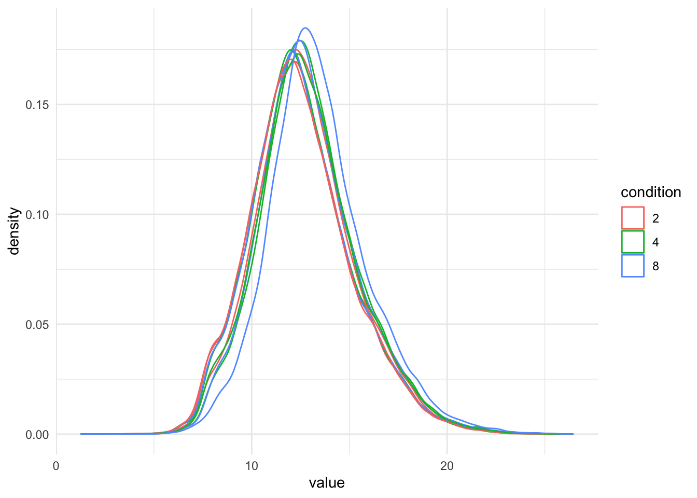
qf[, , "precursors_log"] |> #1.
longForm(colvars = c( "rep", "condition"), rowvars = "species") |> #2.
data.frame() |>
filter(!is.na(value)) |>
ggplot() + #3.
aes(x = value,
colour = condition,
group = colname) +
geom_density() +
theme_minimal() +
facet_wrap(~species)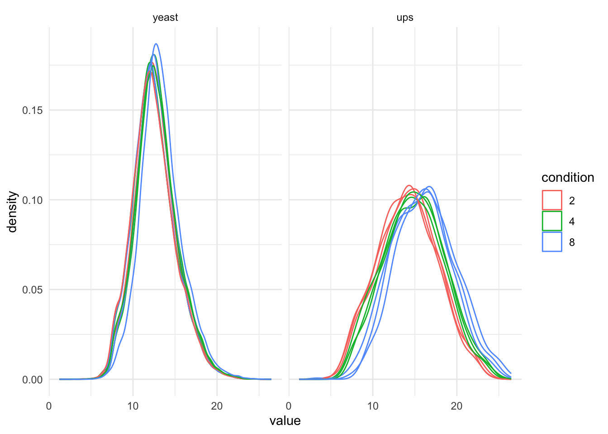
It is clear that we will have to normalise the data.
- no normalisation, STATS = 0 (we do not change the intensities)
- median normalisation,
- total loading normalisation, and
- median of ratio normalisation
qf <- sweep( #4. Subtract log2 norm factor column-by-column (MARGIN = 2)
qf,
MARGIN = 2,
STATS = 0, #1.
i = "precursors_log",
name = "precursors_norm_no"
)
qf <- sweep( #4. Subtract log2 norm factor column-by-column (MARGIN = 2)
qf,
MARGIN = 2,
STATS = nf_log_med(qf, i="precursors_log"), #1.
i = "precursors_log",
name = "precursors_norm_med"
)
qf <- sweep( #4. Subtract log2 norm factor column-by-column (MARGIN = 2)
qf,
MARGIN = 2,
STATS = nf_log_tot(qf, i="precursors_log"), #2.
i = "precursors_log",
name = "precursors_norm_tot"
)
qf <- sweep( #4. Subtract log2 norm factor column-by-column (MARGIN = 2)
qf,
MARGIN = 2,
STATS = nf_log_medrat(qf, i="precursors_log"), #3.
i = "precursors_log",
name = "precursors_norm_mr"
)
qf <- sweep( #4. Subtract log2 norm factor matrix diann (MARGIN = 1:2)
qf,
MARGIN = 1:2,
STATS = get_spectronaut_nf(qf, i="precursors_log"), #3.
i = "precursors_log",
name = "precursors_norm_spectr"
)We explore the effect of the total normalisation in the subsequent plot.
precursors_norm_sets <- grep("precursors_norm", names(qf), value = TRUE)
qf[, , precursors_norm_sets] |>
longForm(colvars = c( "rep", "condition")) |>
data.frame() |>
mutate(assay = gsub(assay, pattern = "precursors_norm_", replacement = "")) |>
filter(!is.na(value)) |>
ggplot() +
aes(x = value,
colour = condition,
group = colname) +
geom_density() +
labs(subtitle = "Normalised log2 precursor intensities") +
facet_wrap(~assay) +
theme_minimal()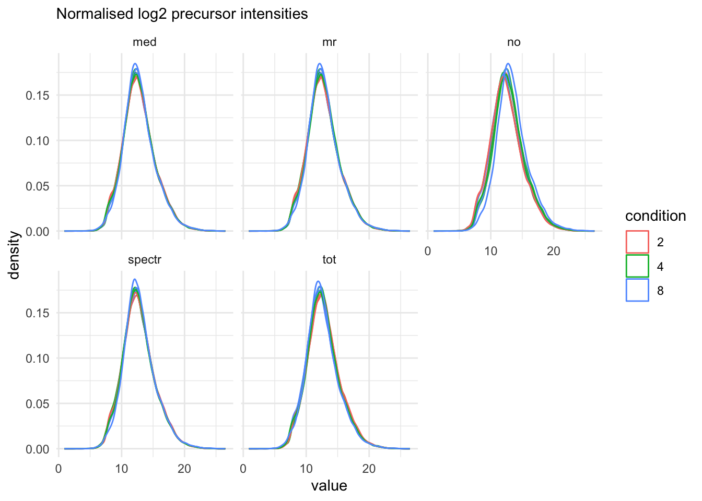
Visually, we do not see real changes.
3.5 Summarisation
Here, we will evaluate three popular summarisation methods.
maxLFQ
median polish
median summarisation
maxLFQ summarise the precursor-level data into protein intensities using maxLFQ. maxLFQ first calculates all pairwise log ratio’s between samples only using their shared precursors. Particularly, it uses the median of the log ratio’s between the shared precursors s, i.e. \[r_{ij} = median(y_{sj}-y_{si})\].
Hence, it first eliminates peptide effects. It then estimates the summaries by solving
\[
\sum_i\sum_j(y^{prot}_j - y^{prot}_i - r_ij)^2
\] It is implemented in the maxLFQ function of the iq package.
for (normassay in precursors_norm_sets)
{
qf <- aggregateFeatures(
qf, i = normassay,
name = paste0("proteins",gsub(normassay, pattern = "precursors_norm", replacement=""),"_maxLFQ"),
fcol = "PG_ProteinGroups",
fun = function(X) iq::maxLFQ(X)$estimate
)
}- median polish is a simple and robust procedure proposed by the statistician John Tukey to fit an additive model for data in a two-way layout table (usually, results from a factorial experiment) of the form row effect + column effect + overall median. Median polish utilizes the medians obtained from the rows and the columns of a two-way table to iteratively calculate the row effect and column effect on the data. The results are robust to outliers, as the iterative procedure uses the medians rather than the means. Here, the row effects are the feature effects and the column effects are the sample/run effects. Particularly, following model is considered:
\[ y_{ip} = \beta_p^\text{pre} + \beta_i^\text{samp} + \epsilon_{ip} \]
where \(y_{ip}\) is the log-normalised precursor intensity for precursor \(p\) belonging to protein \(P\) in sample \(i\). \(\beta_p^\text{pep}\) is the average effect of precursor \(p\), which account for the fact that different precursor yield different baseline intensities (see issue 2. above). \(\beta_i^\text{samp}\) is the average effect of sample \(i\). In other words, it provides the estimated log2-transformed and normalised intensity of protein \(P\) in sample \(i\) corrected for the precursor effect, which will be used as the summarised protein value. \(\epsilon_{ip}\) is the residual effect that cannot be explained by the average sample and precursor effects.
for (normassay in precursors_norm_sets)
{
qf <- aggregateFeatures(
qf, i = normassay,
name = paste0("proteins",gsub(normassay, pattern = "precursors_norm", replacement=""),"_medpol"),
fcol = "PG_ProteinGroups",
fun = MsCoreUtils::medianPolish,
na.rm = TRUE
)
}- We finally adopt simple median summarisation
for (normassay in precursors_norm_sets)
{
qf <- aggregateFeatures(
qf, i = normassay,
name = paste0("proteins",gsub(normassay, pattern = "precursors_norm", replacement=""),"_median"),
fcol = "PG_ProteinGroups",
fun = matrixStats::colMedians,
na.rm = TRUE
)
}proteins_sets <- grep("proteins", names(qf), value = TRUE)
qf[, , proteins_sets] |>
longForm(colvars = c( "rep", "condition")) |>
data.frame() |>
mutate(assay = gsub(assay, pattern = "proteins_", replacement = ""),
norm = strsplit(assay, split = "_") |>
sapply(`[`, 1),
sum = strsplit(assay, split = "_") |>
sapply(`[`, 2)) |>
filter(!is.na(value)) |>
ggplot() +
aes(x = value,
colour = condition,
group = colname) +
geom_density() +
theme_minimal() +
facet_grid(norm~sum) +
labs(subtitle = "Normalised log2 protein intensities")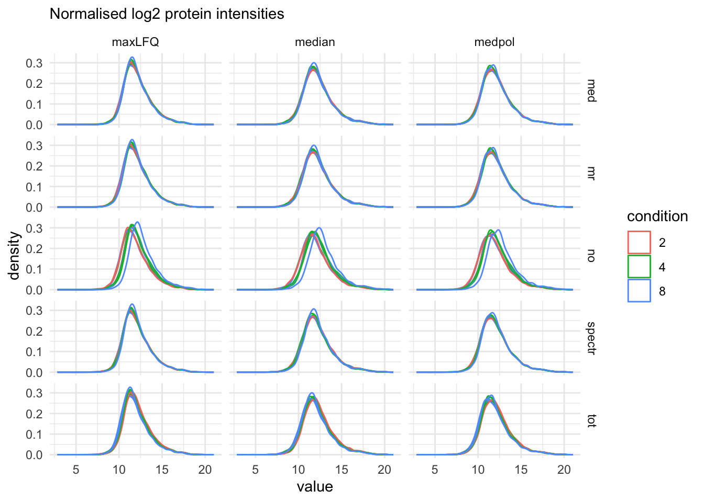
proteins_sets <- grep("proteins", names(qf), value = TRUE)
qf[, , proteins_sets] |>
longForm(colvars = c( "rep", "condition"), rowvars = "species") |>
data.frame() |>
filter(species =="yeast")|>
mutate(assay = gsub(assay, pattern = "proteins_", replacement = ""),
norm = strsplit(assay, split = "_") |>
sapply(`[`, 1),
sum = strsplit(assay, split = "_") |>
sapply(`[`, 2)) |>
filter(!is.na(value)) |>
ggplot() +
aes(x = value,
colour = condition,
group = colname) +
geom_density() +
theme_minimal() +
facet_grid(norm~sum) +
labs(subtitle = "Normalised log2 protein intensities")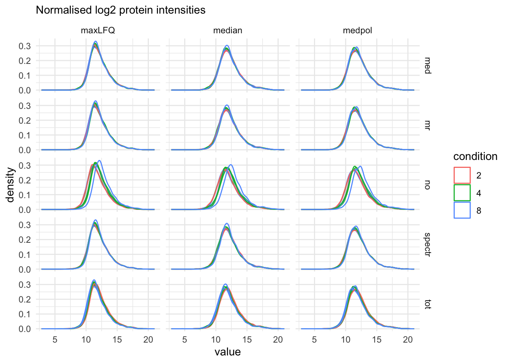
The data processing is complete.
plot(qf)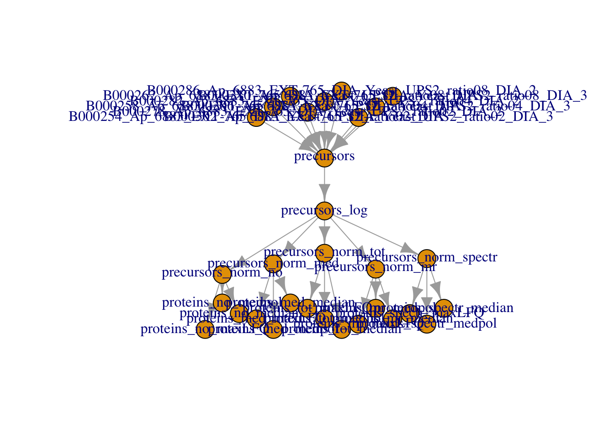
4 Data Modeling and Inference
Setup model and contrasts of interest.
model <- ~ condition
vd <- ExploreModelMatrix::VisualizeDesign(
sampleData = colData(qf),
designFormula = model,
textSizeFitted = 4
)
vd$plotlist[[1]]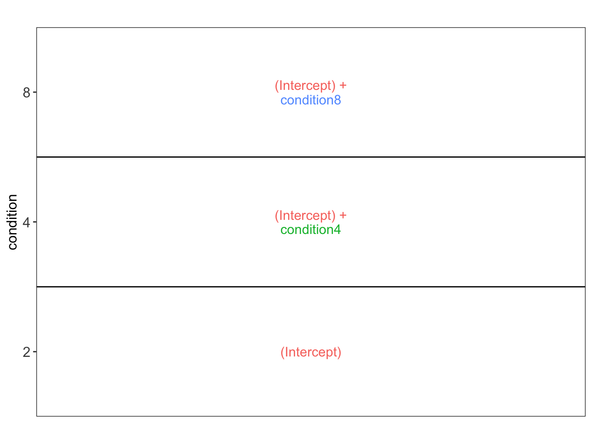
(allHypotheses <- createPairwiseContrasts(
model, colData(qf), "condition"
)
)[1] "condition8 - condition4 = 0" "condition4 = 0"
[3] "condition8 = 0" (L <- makeContrast(
allHypotheses,
parameterNames = colnames(vd$designmatrix)
)) condition8 - condition4 condition4 condition8
(Intercept) 0 0 0
condition4 -1 1 0
condition8 1 0 1Fit models and do inference for all methods and quantities (“Protein.Quantified”, “Protein.Normalised”, “PG.MaxLFQ”).
for (i in proteins_sets)
qf <- msqrob(
qf,
i = i,
formula = model,
robust = TRUE) |>
hypothesisTest(i = i, contrast = L)We extract all results tables
inferences <- lapply(proteins_sets, function(i) {
msqrobCollect(qf[[i]], L) |>
mutate(species = rep(rowData(qf[[i]])$species, ncol(L)),
method = i |> gsub(pattern="proteins_",replacement =""),
norm = strsplit(method, split = "_") |>
sapply(`[`, 1),
sum = strsplit(method, split = "_") |>
sapply(`[`, 2))
}
)
inferences <- do.call(rbind, inferences)5 Assess performance
Note, that the evaluations in this section are typically not possible on real experimental data. Indeed, we are using a spike-in dataset so we know the ground truth: all human UPS proteins are differentially abundant (DA) between the conditions and the yeast proteins are non-DA.
We use a nominal FDR level of 0.05
alpha <- 0.055.1 Real Fold changes
As this is a spike-in study with known ground truth, we can also plot the log2 fold change distributions against the expected values, in this case 0 for the yeast proteins and the difference of the log concentration for the spiked-in UPS standards. We first create a small table with the real values.
As this is a spike-in study with known ground truth, we can also plot the log2 fold change distributions against the expected values, in this case 0 for the yeast proteins and the difference of the log concentration for the spiked-in UPS standards. We first create a small table with the real values.
- We extract the levels from factor condition
- We convert then into a number as they refer to the real ratio
- We log2-transform them
- We calculate all pairwise differences between log2 transformed ratio’s to obtain the log2 fold changes
We use a similar operation to construct the name of the corresponding contrast.
(realLogFC <- data.frame(
logFC = colData(qf)$condition |>
levels() |> # 1.
as.double() |> # 2.
log2() |> # 3.
combn(m=2, FUN = diff), #4.
contrast = colData(qf)$condition |>
levels() |>
combn(m=2, FUN= function(x) paste0(x[2]," - ",x[1])) |>
recode("4 - 2" = "condition4",
"8 - 2" = "condition8",
"8 - 4" = "condition8 - condition4")
)
) logFC contrast
1 1 condition4
2 2 condition8
3 1 condition8 - condition45.2 True and false positives
All human UPS proteins are differentially abundant (DA) between the conditions and the yeast proteins are non-DA. We make a new variable spikein in the inference_list.
tpFpTable <- group_by(inferences, norm, sum, contrast) |>
filter(adjPval < alpha) |>
summarise("TP" = sum(species == "ups"),
"FP" = sum(species != "ups"),
"FDP" = mean(species != "ups")) # colors <- c(
# maxLFQ = "#fcba03",
# medpol = "#c29310",
# median = "#423512"
# )
tpFpTable |> pivot_longer(
cols = c("TP", "FP"),
names_to = "metric", values_to = "count") |>
ggplot() +
aes(
x = norm, y = count,
fill = sum
) +
geom_bar(
stat = "identity", position = position_dodge(preserve = "single"),
color = "black"
) +
facet_grid(contrast ~ metric, scales = "free") +
theme_minimal() +
# scale_fill_manual(values = colors, breaks = names(colors)) +
theme(axis.text.x = element_text(angle = 90, hjust = 1))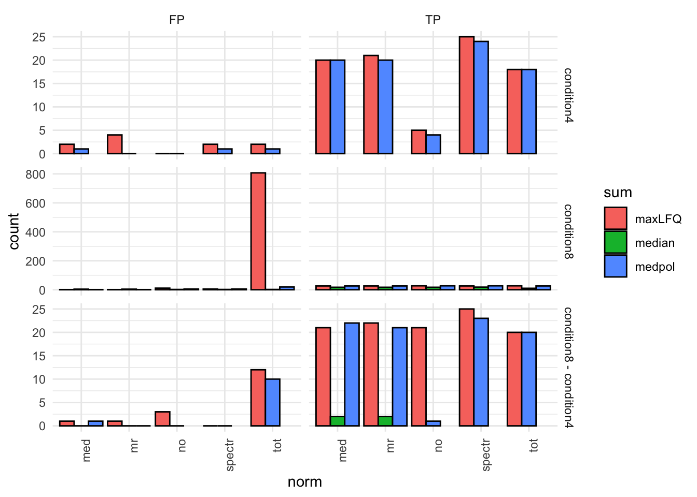
5.3 TPR - FDP curves
We generate the TPR-FDP curves to assess the performance of the different workflows to prioritise differentially abundant proteins. Again, these curves are built using the ground truth information about which proteins are differentially abundant (spiked in) and which proteins are constant across samples. We create two functions to compute the TPR and the FDP.
computeFDP <- function(pval, tp) {
ord <- order(pval)
fdp <- cumsum(!tp[ord]) / 1:length(tp)
fdp[order(ord)]
}
computeTPR <- function(pval, tp, nTP = NULL) {
if (is.null(nTP)) nTP <- sum(tp)
ord <- order(pval)
tpr <- cumsum(tp[ord]) / nTP
tpr[order(ord)]
}We apply these functions and compute the corresponding metric using the statistical inference results and the ground truth information.
performance <- inferences |> group_by(norm, sum, contrast) |>
na.exclude() |>
mutate(tpr = computeTPR(pval, species == "ups"),
fdp = computeFDP(pval, species == "ups")) |>
arrange(fdp)We also highlight the observed FDP at a \(alpha = 5\%\) FDR threshold.
workPoints <- performance |>
group_by(sum, norm, contrast) |>
filter(adjPval < 0.05) |>
slice_max(pval)ggplot(performance) +
aes(
y = fdp,
x = tpr,
color = norm
) +
geom_line() +
geom_point(data = workPoints, size = 3) +
geom_hline(yintercept = 0.05, linetype = 2) +
facet_grid(sum ~ contrast) +
coord_flip(ylim = c(0, 0.2)) +
theme_minimal()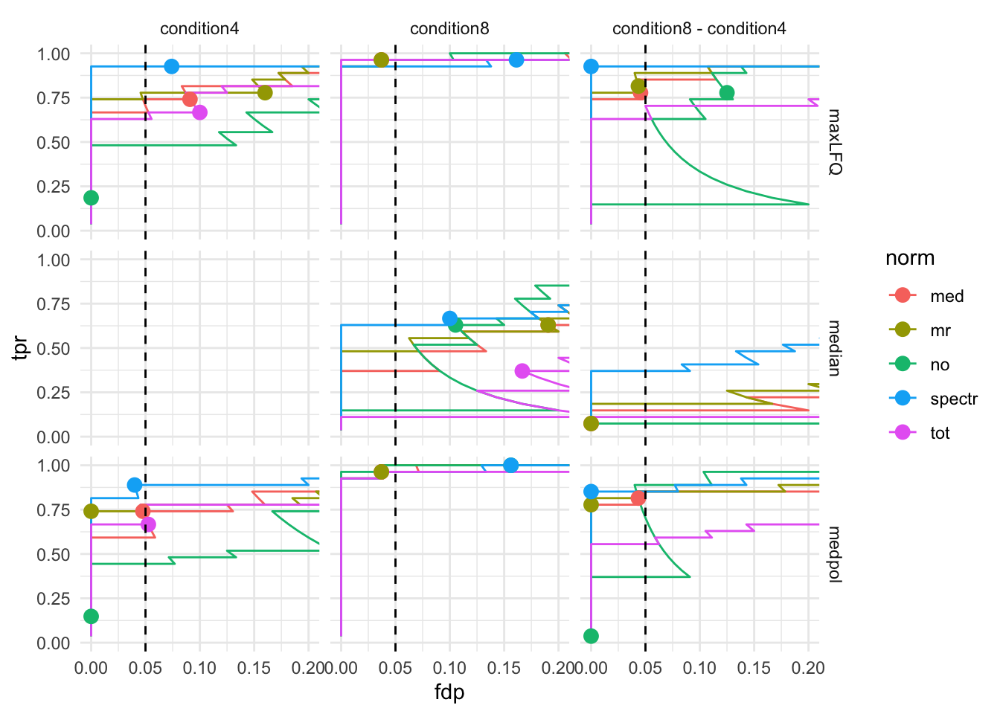
ggplot(performance) +
aes(
y = fdp,
x = tpr,
color = sum
) +
geom_line() +
geom_point(data = workPoints, size = 3) +
geom_hline(yintercept = 0.05, linetype = 2) +
facet_grid(norm ~ contrast) +
coord_flip(ylim = c(0, 0.2)) +
theme_minimal()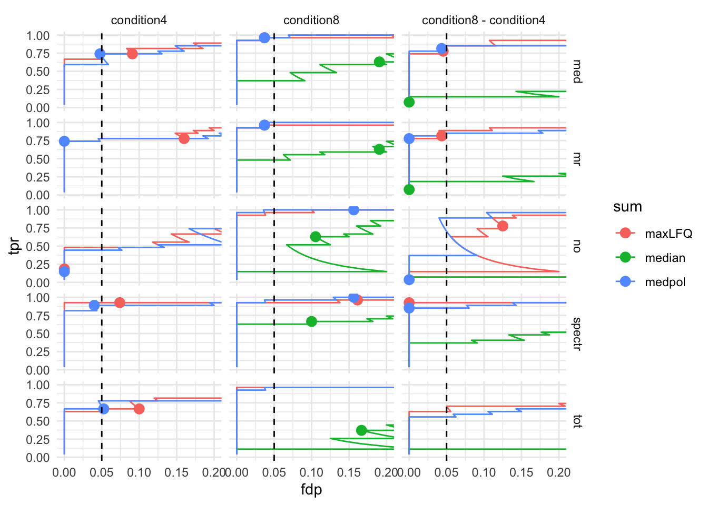
5.4 volcano-plots
We make a separate plot per contrast and compare the volcano plots for all normalisation x summarisation combinations.
for (i in unique(inferences$contrast))
{
print(
inferences |>
filter(contrast == i) |>
plot_volcano() +
facet_grid(sum~norm) +
aes(color = species, shape = adjPval < alpha) +
scale_color_manual(
values = c("grey20", "firebrick"),
name = "species",
labels = c("yeast", "ups")
) +
labs(shape="FDR < 0.05", subtitle = i) +
geom_vline(aes(xintercept = logFC), data = realLogFC |> filter(contrast == i), col ="firebrick") +
geom_hline(aes(yintercept = -log10(adjAlpha)), data = inferences |>
filter(contrast == i) |>
group_by(sum,norm) |>
summarize(adjAlpha = alpha *mean(adjPval < alpha, na.rm=TRUE), .groups="drop"))
)
}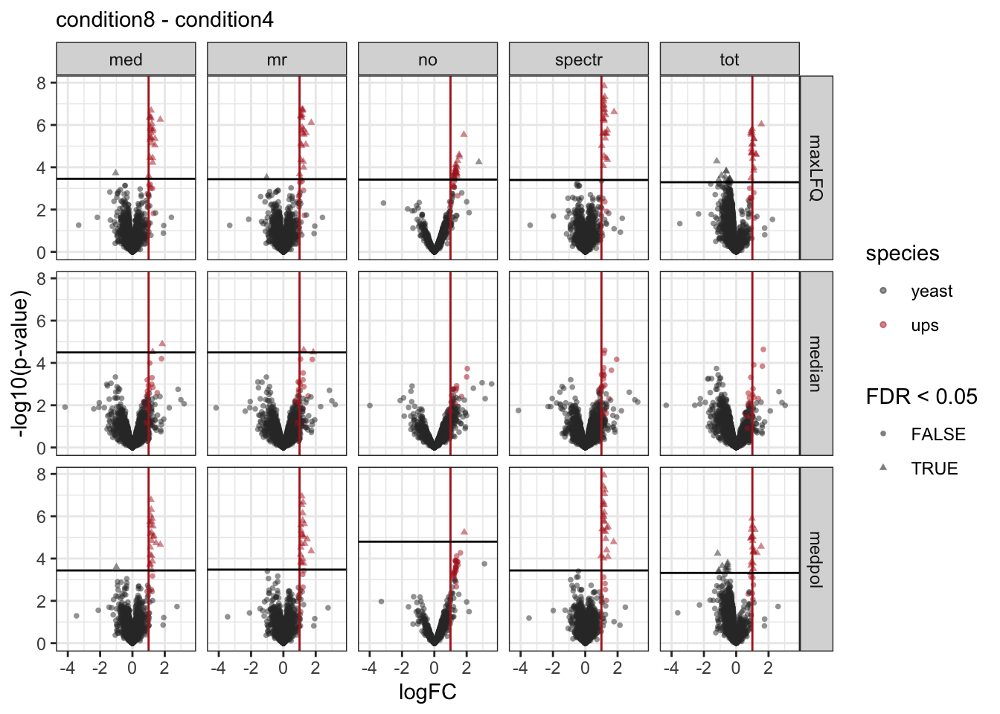
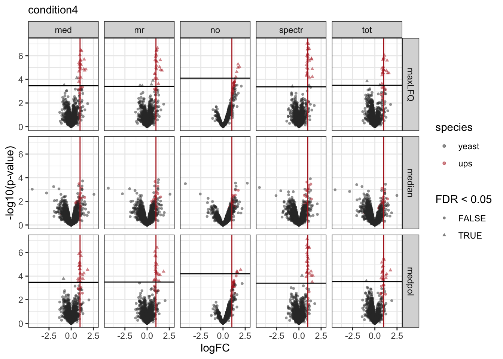
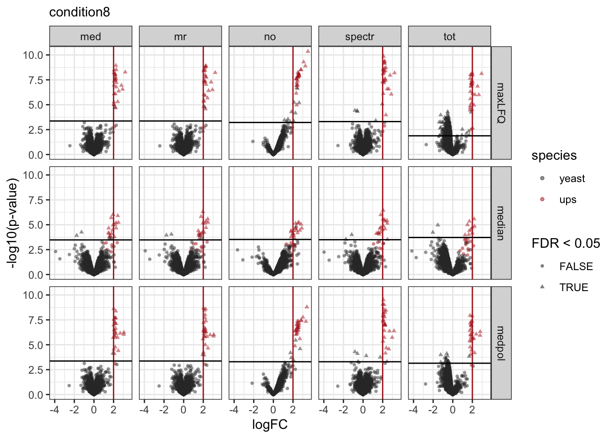
References
Staes, An, Teresa Mendes Maia, Sara Dufour, Robbin Bouwmeester, Ralf Gabriels, Lennart Martens, Kris Gevaert, Francis Impens, and Simon Devos. 2024. “Benefit of in Silico Predicted Spectral Libraries in Data‑independent Acquisition Data Analysis Workflows.” Journal of Proteome Research 23 (6): 2078–89. https://doi.org/10.1021/acs.jproteome.4c00048.